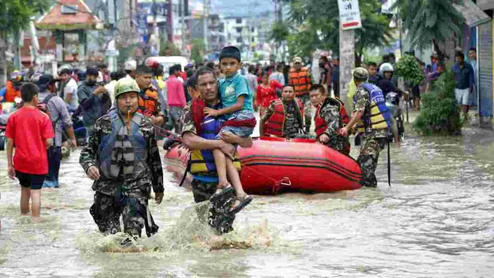

🌊 నేపాల్లో భారీ ఫ్లాష్ ఫ్లడ్.. 105 మంది భారతీయులు సహా 384 మంది గల్లంతు

నేపాల్లో బుధవారం ఉదయం భారీ ప్రకృతి విపత్తు సంభవించింది. టిబెట్ సరిహద్దుకు సమీపంలోని రసువా జిల్లాలో భోటే కోషి నదిలో ఒక్కసారిగా భారీగా వరద నీరు ఉప్పొంగడంతో తీవ్ర విధ్వంసం చోటుచేసుకుంది. వరద ప్రవాహం ఇళ్లు, వాహనాలు, రోడ్లు, వంతెనలు, హైడ్రోపవర్ ప్రాజెక్టులను కొట్టుకుపోయింది. ఈ ఘటనలో కనీసం 9 మంది మరణించినట్లు తాజా రాయిటర్స్ నివేదిక వెల్లడించింది. మరోవైపు వందలాది మంది ఆచూకీ తెలియకపోవడంతో ఆందోళన మరింత పెరిగింది.
నేపాల్ టూరిజం బోర్డు ప్రాథమికంగా విడుదల చేసిన వివరాల ప్రకారం 384 మంది ప్రయాణికులు, పర్యాటకులు గల్లంతైన జాబితాలో ఉన్నారు. వీరిలో 291 మంది విదేశీయులు కాగా, 93 మంది నేపాలీ పౌరులు ఉన్నారు. గల్లంతైన విదేశీయుల్లో భారతీయుల సంఖ్య ఎక్కువగా ఉంది. మొత్తం 105 మంది భారతీయులు ఈ జాబితాలో ఉన్నట్లు సమాచారం. 37 మంది ఎన్ఆర్ఐలు కూడా గల్లంతైనవారిలో ఉన్నట్లు తాజా నివేదికలు పేర్కొంటున్నాయి.
వరదకు ప్రధాన కారణాలు & అనుమానాలు
ఈ ప్రాంతం హిమాలయ పర్వత ప్రాంతంలో ఉండటంతో అకస్మాత్తుగా వచ్చిన వరదకు కారణం ఏమిటన్న దానిపై అధికారులు, నిపుణులు పరిశీలిస్తున్నారు. ఉపగ్రహ చిత్రాలు, ఘటనకు సంబంధించిన వీడియోలను పరిశీలించిన తర్వాత మంచు, రాళ్లతో కూడిన భారీ అవలాంచ్ నదీ ప్రవాహాన్ని అడ్డుకుని, ఆ తర్వాత ఒక్కసారిగా భారీ నీటి ప్రవాహం దిగువ ప్రాంతాలకు వచ్చినట్లు అనుమానిస్తున్నారు. అయితే వరదకు ఖచ్చితమైన కారణంపై అధికారిక దర్యాప్తు కొనసాగుతోంది.

భారీ వరద కారణంగా రసువా జిల్లాలోని పలు ప్రాంతాల్లో పరిస్థితి భయానకంగా మారింది. నీటి ప్రవాహం వేగంగా పెరగడంతో నదీ పరివాహక ప్రాంతాల్లో ఉన్న ప్రజలు, పర్యాటకులు తీవ్ర ఇబ్బందులు ఎదుర్కొన్నారు. కొన్ని గ్రామాలు, రహదారులు, వంతెనలు పూర్తిగా దెబ్బతిన్నాయి. వరద మట్టి, రాళ్లు, శిథిలాలతో నిండిపోవడంతో సహాయక బృందాలు ప్రభావిత ప్రాంతాలకు చేరుకోవడం కూడా కష్టంగా మారింది.
విద్యుత్ ప్రాజెక్టులపై ప్రభావం
హైడ్రోపవర్ ప్రాజెక్టులపై కూడా వరద తీవ్ర ప్రభావం చూపింది. రాయిటర్స్ ప్రకారం సుమారు 430 మెగావాట్ల విద్యుత్ ఉత్పత్తి ప్రభావితమైంది. ఇది నేపాల్ మొత్తం హైడ్రోపవర్ సామర్థ్యంలో 12 శాతానికి పైగా ఉంటుంది. దీంతో వరద కేవలం ప్రాణనష్టానికే పరిమితం కాకుండా దేశంలోని విద్యుత్ మౌలిక సదుపాయాలపై కూడా ప్రభావం చూపింది.
గల్లంతైన వారిలో భారతీయులు పెద్ద సంఖ్యలో ఉండటంతో భారత్లో కూడా ఆందోళన నెలకొంది. భారతీయ పర్యాటకులు, యాత్రికుల కుటుంబాలు తమ వారి క్షేమ సమాచారం కోసం ఎదురుచూస్తున్నాయి. గల్లంతైన వారి వివరాలను సేకరించడం, వారి ఆచూకీ తెలుసుకోవడం, సురక్షితంగా ఉన్నవారిని గుర్తించడం వంటి చర్యలు కొనసాగుతున్నాయి. నేపాల్ అధికారులు, భద్రతా బలగాలు, రెస్క్యూ సిబ్బంది సహాయక చర్యల్లో పాల్గొంటున్నారు.
కైలాస్ మానస సరోవర్ యాత్రికులు
కొన్ని నివేదికల ప్రకారం గల్లంతైన భారతీయుల్లో కైలాస్ మానస సరోవర్ యాత్రకు వెళ్లిన యాత్రికులు కూడా ఉన్నారు. ఒక ట్రావెల్ ఏజెన్సీ సమాచారాన్ని ఉటంకిస్తూ కనీసం 59 మంది భారతీయులు ఈ యాత్రకు సంబంధించినవారిగా ఉన్నట్లు ది న్యూ ఇండియన్ ఎక్స్ప్రెస్ పేర్కొంది. అయితే గల్లంతైన వారి సంఖ్య, వారి ప్రస్తుత పరిస్థితిపై అధికారిక ధృవీకరణ ప్రక్రియ ఇంకా కొనసాగుతోంది.
రెస్క్యూ ఆపరేషన్లో నేపాల్ సైన్యం, పోలీసులు, స్థానిక అధికారులు పాల్గొంటున్నారు. ప్రతికూల వాతావరణం, దెబ్బతిన్న రహదారులు, నదిలో పేరుకుపోయిన మట్టి, రాళ్లు సహాయక చర్యలకు అడ్డంకిగా మారాయి. కొన్ని ప్రాంతాల్లో హెలికాప్టర్ల ద్వారా సహాయం అందించేందుకు ప్రయత్నాలు జరుగుతున్నప్పటికీ వాతావరణ పరిస్థితులు సవాలుగా మారాయి.
ముప్పు హెచ్చరికలు & హిమాలయ వాతావరణం
అంతేకాకుండా నదిలో పైప్రాంతంలో ఏర్పడిన అడ్డంకి కారణంగా మరోసారి భారీగా నీరు దిగువ ప్రాంతాలకు వచ్చే ప్రమాదం ఉందని అధికారులు హెచ్చరించారు. దీంతో నదీ తీర ప్రాంతాల్లో ఉన్న ప్రజలను అప్రమత్తంగా ఉండాలని, ప్రమాదకర ప్రాంతాలకు వెళ్లవద్దని సూచిస్తున్నారు. రసువాతో పాటు ఇతర జిల్లాల్లో కూడా వరద ముప్పుపై అధికారులు నిఘా పెట్టారు.
ఈ ఘటన నేపాల్లో హిమాలయ ప్రాంతాలపై పెరుగుతున్న ప్రకృతి విపత్తుల ముప్పును మరోసారి గుర్తు చేసింది. హిమాలయాల్లో మంచు, హిమనదులు వేగంగా మారుతున్న నేపథ్యంలో ఆకస్మిక వరదలు, అవలాంచ్లు, కొండచరియలు విరిగిపడటం వంటి ప్రమాదాలు మరింత ఆందోళన కలిగిస్తున్నాయి. అయితే ప్రస్తుత ఘటనకు వాతావరణ మార్పులే ప్రత్యక్ష కారణమని నిర్ధారించడానికి ఇంకా మరింత శాస్త్రీయ పరిశీలన అవసరం.
ప్రస్తుతం నేపాల్లో ప్రధాన ప్రాధాన్యత గల్లంతైన వారిని గుర్తించడం, ప్రాణాలతో ఉన్నవారిని సురక్షిత ప్రాంతాలకు తరలించడం, బాధిత ప్రాంతాలకు ఆహారం, వైద్యం, ఇతర అత్యవసర సహాయం అందించడం. మృతుల సంఖ్య, గల్లంతైన వారి సంఖ్య ఇంకా మారే అవకాశం ఉందని అధికారులు చెబుతున్నారు. అందువల్ల అధికారికంగా ధృవీకరించని సమాచారాన్ని నమ్మకుండా, ప్రభుత్వ అధికారులు మరియు అధికారిక సంస్థలు విడుదల చేసే తాజా వివరాలను మాత్రమే పరిగణనలోకి తీసుకోవడం మంచిది.
నేపాల్లోని భోటే కోషి నది వరద ప్రస్తుతం దేశవ్యాప్తంగా తీవ్ర విషాదాన్ని మిగిల్చింది. 9 మంది మరణాలు, 384 మంది గల్లంతు, వారిలో 105 మంది భారతీయులు అనే ప్రాథమిక సమాచారం ఈ విపత్తు తీవ్రతను తెలియజేస్తోంది. రెస్క్యూ సిబ్బంది గల్లంతైన వారిని వీలైనంత త్వరగా గుర్తించి వారి కుటుంబాలకు సమాచారం అందించేందుకు ప్రయత్నిస్తున్నారు.